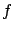
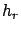

Siguiente: Modelo de Walfisch-Ikegami
Subir: Modelo de Erceg-SUI
Anterior: Modelo de Erceg-SUI
Índice General
En la ecuación (5.2) se considera la dependencia de la
pérdida de camino con la frecuencia, pero no se toman en cuenta las
variaciones por pérdidas de difracción para frecuencias distintas a
1.9 GHz. Esto puede corregirse agregando un término a la ecuación
(5.1) debido a las pérdidas por difracción, basándose en
los resultados presentados en [20][21] para
entornos suburbanos
siendo  la frecuencia en MHz.
El modelo fue originalmente desarrollado para el caso en que la
altura del móvil es de 2 m, pero puede ser extendido a otras
condiciones en base a los aportes de [22], adicionando
otro factor correctivo a la ecuación (5.1)
donde  es la altura (sobre el terreno) de la antena móvil en
metros.
Finalmente, la ecuación de pérdida de camino incluyendo los factores
correctivos puede escribirse como:
El rango de validez de los parámetros es:
Siguiente: Modelo de Walfisch-Ikegami
Subir: Modelo de Erceg-SUI
Anterior: Modelo de Erceg-SUI
Índice General
SAPO